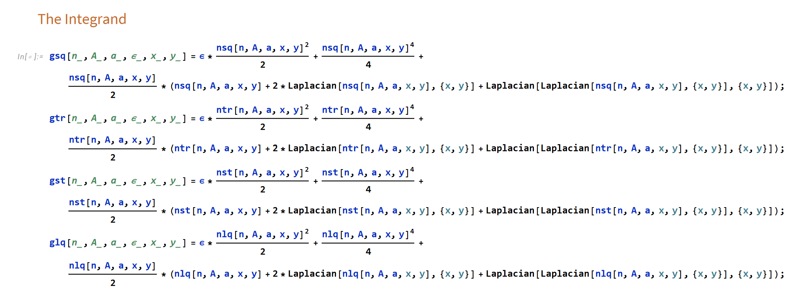
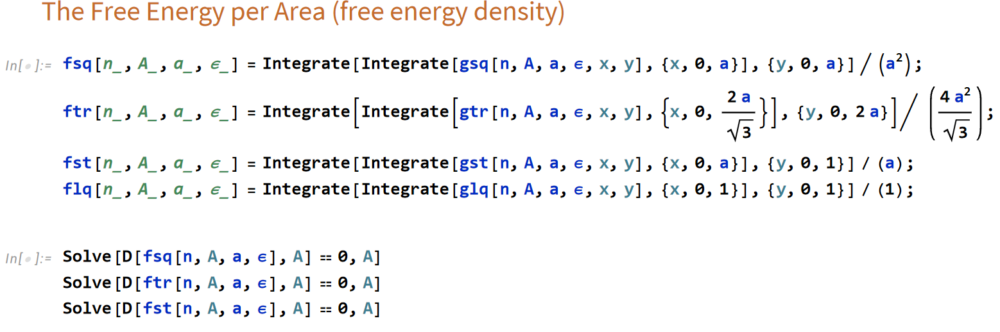
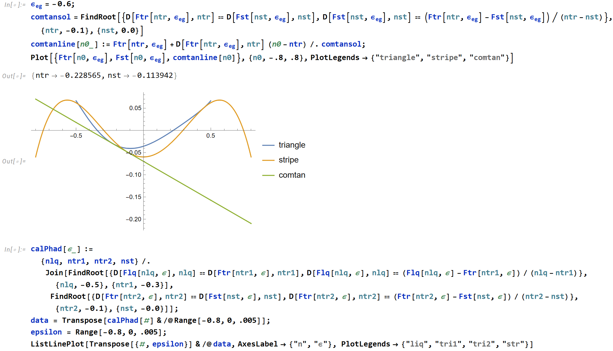
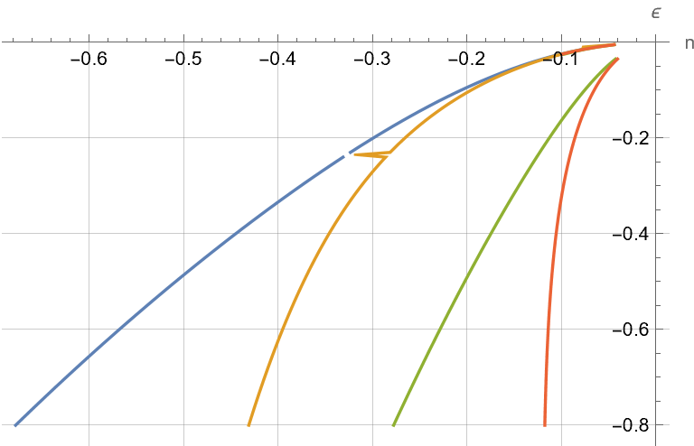
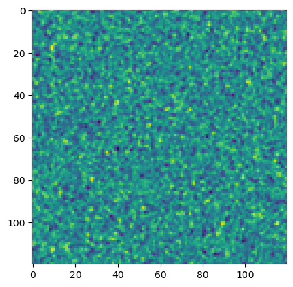
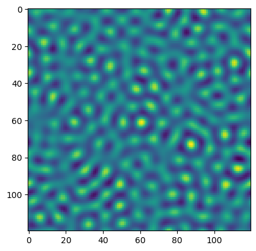
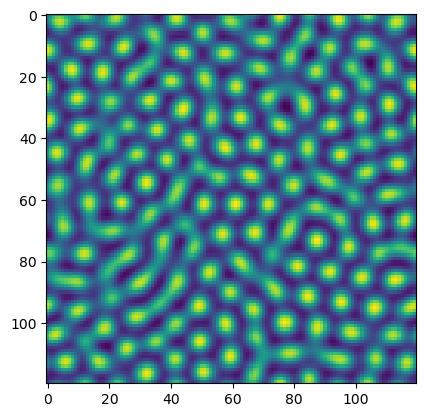
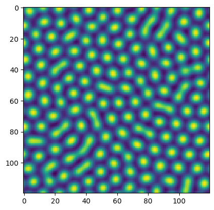
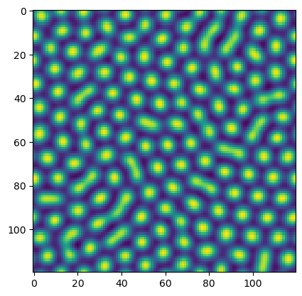
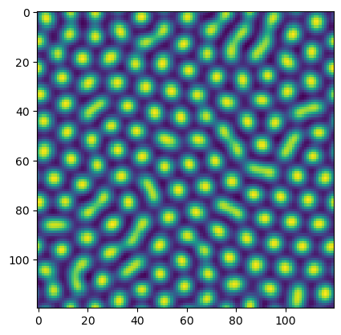

PFC: Phase Diagram
One Mode Approximation
[1] Emdadi, A., Asle Zaeem, M. & Asadi, E. Revisiting phase diagrams of two-mode phase-field crystal models. Computational Materials Science 123, 139–147 (2016).
Assuming that the system is in crystalline state and the average value of the density is \(\bar{n}\), then the functional form of a periodic density can be written in terms of reciprocal lattice vectors (RLVs), \(\vec{k}\), and their amplitudes \(A_{\vec{k}}\) by: \begin{align} n_{phase} = \bar{n}+\sum_{\vec{k}}A_{\vec{k}}e^{i\vec{k}\cdot\vec{r}}+c.c. \end{align} The dimensionless density profiles in the solid state for square, triangular, stripe lattice structures in PFC model by considering the first wavelength amplitudes are: \begin{align} n_{sq}&=\bar{n}+A\left(\cos qx+\cos qy\right); \left(q=1\right) \nonumber \\ &=\bar{n}+A\left(\cos x+\cos y\right)\\ n_{tri}&=\bar{n}+A\left(\cos qx \cos \frac{qy}{\sqrt{3}}+\frac{1}{2}\cos\frac{2qy}{\sqrt{3}}\right); \left(q=\frac{\sqrt{3}}{2}\right) \nonumber \\ &= \bar{n}+A\left(\cos \frac{\sqrt{3}}{2}x \cos \frac{1}{2}y+\frac{1}{2}\cos y\right)\\ n_{str}&=\bar{n}+A\cos qx=\bar{n}+A\cos x; \left(q=1\right) \end{align}
the Simplest PFC Model
Take the simplest PFC model for example,
\begin{align} F[n]=\int\left[\varepsilon \frac{n^2}{2}+\frac{n^4}{4}+\frac{n}{2}\left(1+\nabla^2\right)^2n\right]dx \end{align}
Substitute the “one mode approximation” to the integrand (Mathematica):

Integrate per period area and divided by the area to get the free energy density, minimize the free energy density in order to evaluate amplitude \(A\).

Adopt the common tangent method to get the phase field order parameter value in equilibrium:

The phase diagram can be calculated:

the Dynamical Equation
The conserved order parameter evolves as:
\begin{align} \frac{\partial n}{\partial t} &= M\nabla^2\frac{\delta F}{\delta n} \\ &\Downarrow \nonumber \\ \frac{\partial n}{\partial t} &= M\nabla^2\left[\varepsilon n + n^3 + (1+2\nabla^2+\nabla^4)n\right] \end{align}
[1]:
import numpy as np
import matplotlib.pyplot as plt
from scipy import ndimage
def calLap1(phi, dx):
phi_ipj0 = np.roll(phi, 1, axis=0) # phi_ipj0=phi(i+1,j)
phi_imj0 = np.roll(phi, -1, axis=0) # phi_imj0=phi(i-1,j)
phi_i0jp = np.roll(phi, 1, axis=1)
phi_i0jm = np.roll(phi, -1, axis=1)
phi_ipjp = np.roll(phi, (1,1), axis=(0,1))
phi_ipjm = np.roll(phi, (1,-1), axis=(0,1))
phi_imjp = np.roll(phi, (-1,1), axis=(0,1))
phi_imjm = np.roll(phi, (-1,-1), axis=(0,1))
phi_lap = (0.5*(phi_ipj0+phi_imj0+phi_i0jp+phi_i0jm)+0.25*(phi_ipjp+phi_imjp+phi_ipjm+phi_imjm)-3*phi)/(dx**2.0)
return(phi_lap)
# def calLap2(n, dx): 这个函数的稳定性很差...
# lap = ndimage.laplace(n)/(dx**2)
# return(lap)
def calDyn(epsl, M, dx, n):
fun = (epsl+1)*n + n**3 + 2*calLap1(n,dx) + calLap1(calLap1(n,dx),dx)
dyn = calLap1(M*fun, dx)
return(dyn)
epsl = -0.6
nbar = -0.2
M = 1.0
dt = 0.001
a = 2*np.pi
dx = a/10.0 # the larger, the stabler
Lx = Ly = 12*a
Nx = int(Lx/dx)
Ny = int(Ly/dx)
xlst = np.arange(Nx)*dx
ylst = np.arange(Ny)*dx
[xmat, ymat] = np.meshgrid(xlst, ylst,indexing='ij')
A = 0.1
# ntr_all = nbar + A*(np.cos(np.sqrt(3)/2*xmat)*np.cos(0.5*ymat)+0.5*np.cos(ymat))
nlq = np.random.normal(nbar, 1e-1, (Nx,Ny))
n = nlq
nstep = 50000
ndump = 5000
for istep in range(nstep):
n = n+dt*calDyn(epsl, M, dx, n)
if (istep%ndump == 0):
plt.figure()
plt.imshow(n)





